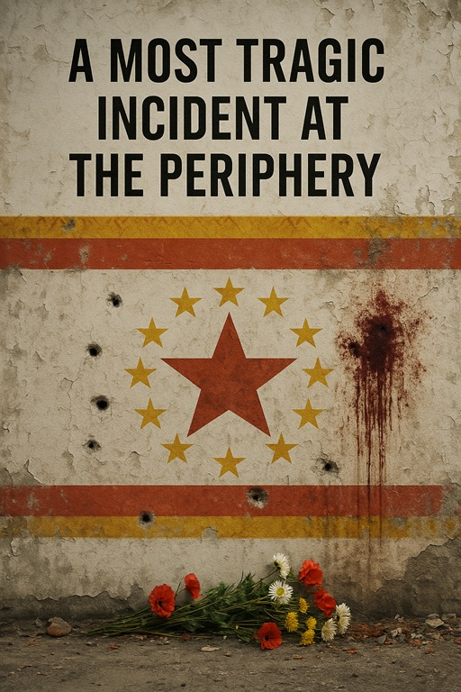
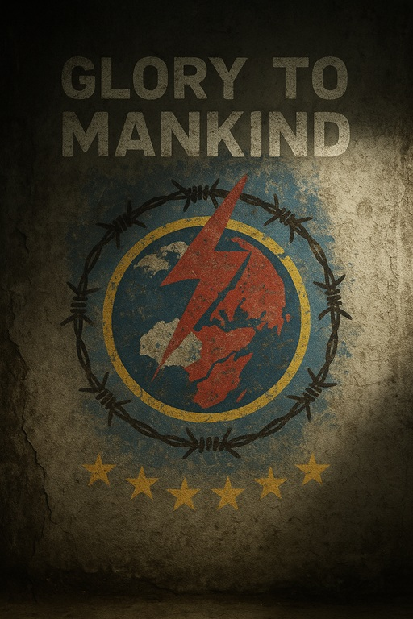

RECORDS OF THE FALLEN
Tales of survival, systems of oppression and justified atrocities.
Last synchronized: 3025.09.14
Recovery status: ${recovery_percent}% complete
Data integrity: COMPROMISED
⚠ ARCHIVE WARNING
Some recovered stories contain mature academic content, tailored for an adult audience. Proceed with caution.
Monthly Dispatch - Recovery Alert System
Enable monthly notifications when additional records are recovered from the archive.
Your communication ID remains confidential. Terminate protocol at any time.
TESTIMONIES
Brief firsthand accounts of moral compromise
Complete
RECOVERY PROGRESS: 100.0%
Reading time: ~12m
Cosmic Pet Care
A bored AI discovers an elegant solution to universal entropy. Sometimes the most horrific acts require the least malice.
Access Testimony
ADDITIONAL TESTIMONY
CORRUPTION DETECTED
CORRUPTION DETECTED
No Data
RECOVERY PROGRESS: 12.7%
[DATA CORRUPTED]
[FRAGMENT RECOVERY FAILED - MULTIPLE SECTOR DAMAGE]
[ERROR: UNABLE TO RECONSTRUCT NARRATIVE STRUCTURE]
[WARNING: PARTIAL DATA SUGGESTS SYSTEMATIC VIOLATION OF ACCORD-SEVEN]
[STATUS: AWAITING ENHANCED RECOVERY PROTOCOLS]
CASE STUDIES
Detailed analysis of systematic moral collapse

Complete
RECOVERY PROGRESS: 100.0%
Reading time: ~2h
A Most Tragic Incident at the Periphery
Another war erupts in the contested mountains of Tashkeria.
Artem, 19, a conscript carrying a rifle he barely knows how to use, is sent into a city that refuses to surrender.
Across the mountains, the neutral Republic of Normark mobilizes its reserves. Not to intervene.
Just to keep the refugees out.

Free Access
RECOVERY PROGRESS: 100.0%
Reading time: ~3h
Glory to Mankind
What remains of mankind lives underground, watched by its own sins.
The stars above are silent. No one knows if silence means peace, or extinction.
Ashlin tunnels deeper into pointless rock, calling herself a "rock bitch" while enduring the Starsiege Directive of endless preparation.
But how do you find meaning when even the leadership doubts the doctrine they order you to follow?
HISTORICAL RECORDS
Comprehensive studies of civilizational structures and justifications of "necessary evils"

Preview Available
RECOVERY PROGRESS: 45.84%
Reading time: ~8h
An Elegy to the Immortals
In a world where magic is carved from the living, empires endure only by deciding who must die, and who is allowed to endure.
Elysia comes of age untouched but owned, trained as ornament and remembrance.
Lucius, a war-scarred veteran, and his protégé Eris seek forbidden knowledge that challenges the empire's foundations.
Each will learn that survival in Archeon demands compromise, betrayal, and the slow surrender of what remains of their own souls.
A curse has been prepared. Casting it will end civilization.
ADDITIONAL RECORD
AWAITING RECOVERY
AWAITING RECOVERY
No Data
RECOVERY PROGRESS: 0.00%
A Requiem for the Living
The second chronicle in the Elegy Cycle. Further documentation of the systematic implementation of soul-based atrocities and their lasting consequences.
FINAL RECORD
DEEP ARCHIVE STATUS
DEEP ARCHIVE STATUS
No Data